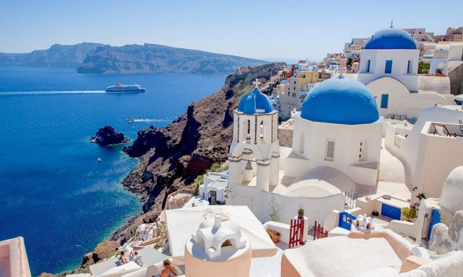
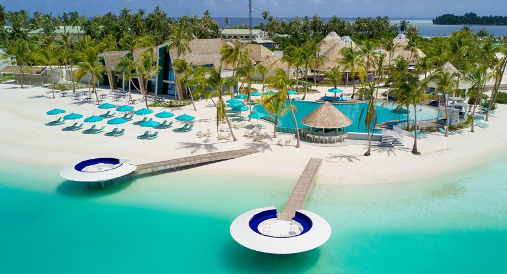
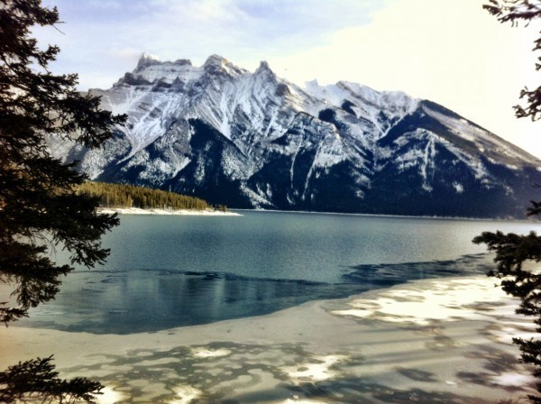
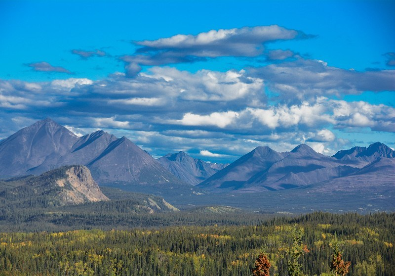
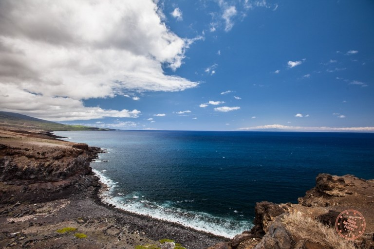
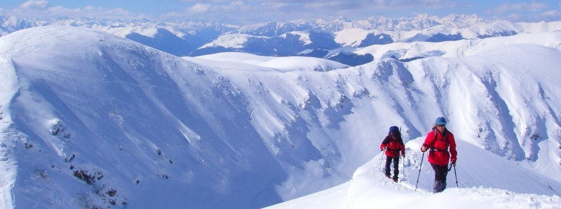
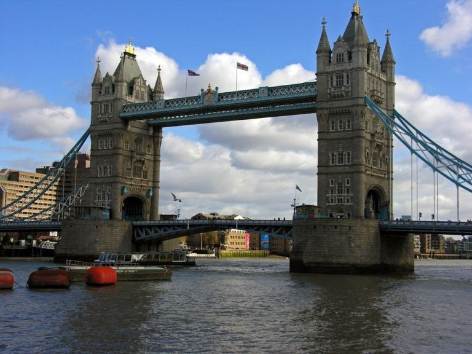

 1.)Greece
My Top dream destination for Incredible beaches and gorgeous architecture Greece has so much to offer.
2.)Seoul,South Korea
Korean food is divine I want to try their food and also their culture. South Korea has so much to offer.
 3.)Maldives
Not all of my dream destinations focus on hardcore activities. Some like the Maldives are more of a decadent destination full of luxury and relaxation. Overwater bungalows, numerous snorkeling sites, and incredible beaches put the islands of the Maldives on my list.
 4.)Canada
Many places in Canada are on my wish list, but the beauty of Banff’s mountains call me. Hikes surrounded by bright blue lakes abound in this paradise.
 5.)Alaska
Another natural beauty on my wish list. Epic landscapes, tons of mountains, and glaciers to hike to.
 6.)Hawaii
One of my dream destinations for incredible beaches, lush tropical forests, and picture-perfect waterfalls, chasing waterfalls, epic hiking, and seeking.
 7.)Japan
7.)Japan
The culture, landscapes, and beauty of Japan lure calls to me. The sushi seals the deal though.
 8.)France-The Pyreness
Most people think of Paris when you say France, but I think of the beautiful mountains and wildlife of the French Pyrenees.
 9.)Hong Kong
9.)Hong Kong
It's the city of skyscrapers. The best part about traveling to Hong Kong with your family is that Hong Kong is home to the famous Disneyland Park and Ocean Park.
 10.)England
London is tops for both historical architecture and current trends in fashion. I would be very excited to finally see Banksy street art!